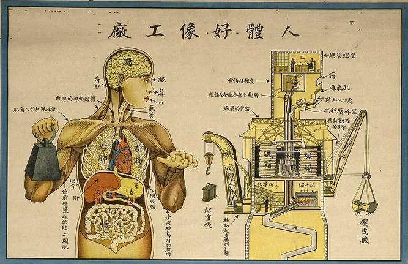
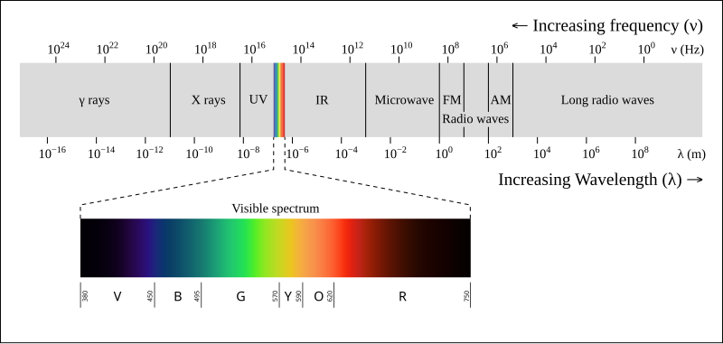
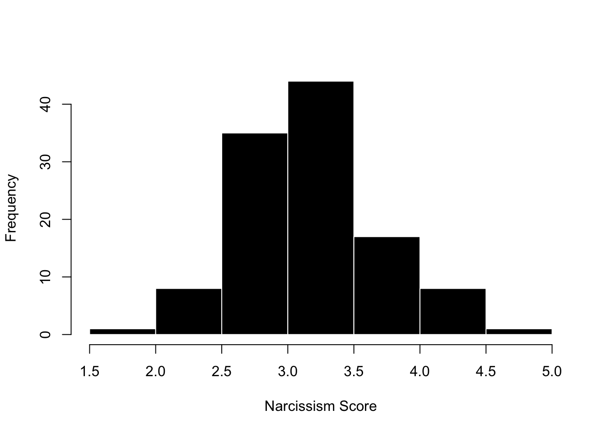
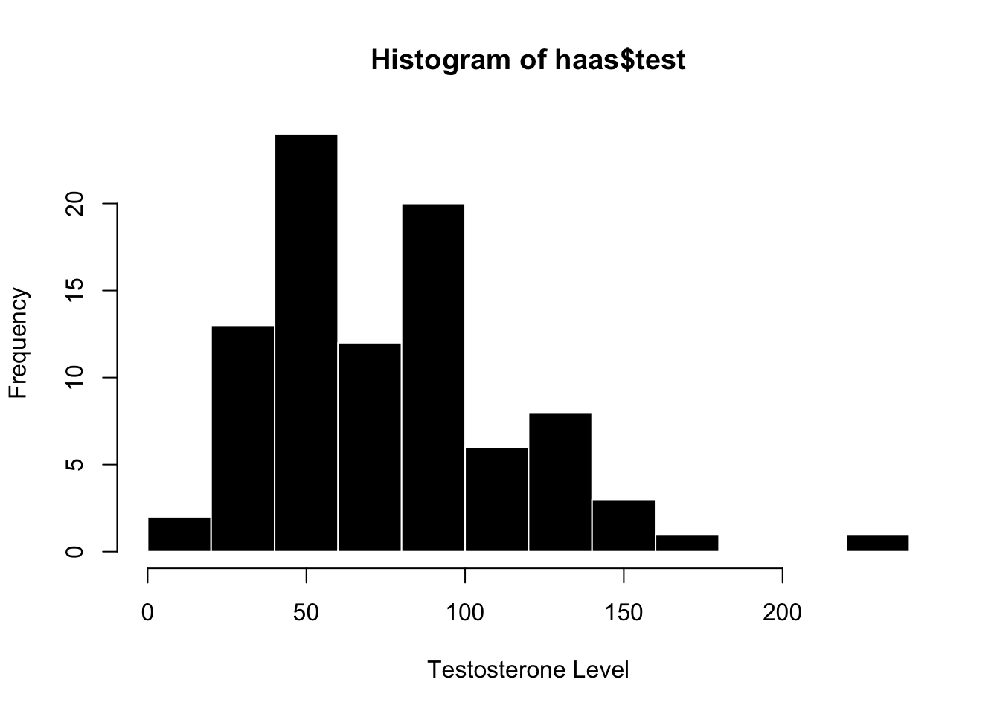
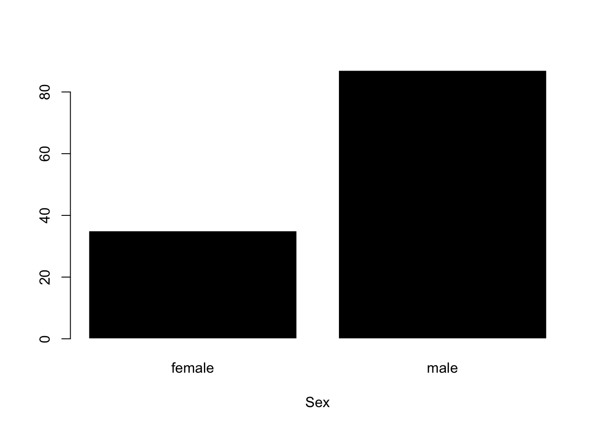
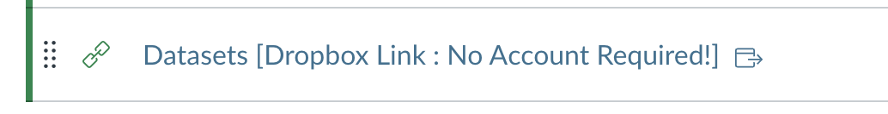
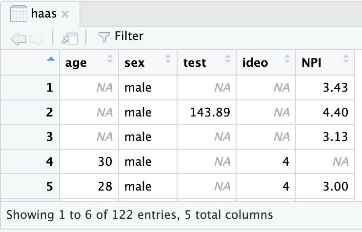

Hello! In this week’s reading, you’ll learn how to work with data in R - first how to navigate datasets, and then how to graph (and think critically about) both categorical and continuous variables.

Chinese medical poster, 1933 (ref US NLM; image source here)
To-Do List:
Read this document and watch the videos.
Part 1 : On creating variables in R
Part 2 : In navigating and installing datasets in R.
Complete the check-in and practice quiz.
Take Quiz 2.
Part 1 : Defining Data
Researchers seeking to bring a scientific approach to psychology love data, and aim to convert complex human thoughts, feelings, and behaviors into numbers. This is called quantitative data, and is the default approach almost all modern research psychologists take. For example:
Psychologists will quantify affect using heart rate monitors, finger temperature gauges, or even simple rating scales of how people are feeling (quick, how bored are you right now on a scale from 0 (not bored; super engaged professor!) to 10 (….most bored ever; surprised I’m even reading this right now)….see, you are just a number!)
Psychologists often quantify behavior by measuring reaction time, the number of times a person fidgets in a chair, how far a person will sit from another person in a study, the speed of a group. And even qualitative data - like a person’s journal entry - would be turned into hard numbers by a researcher (who would ask a team of research assistants to read the journal and then count or provide a subjective rating to what they observe. this is called behavioral coding; we’ll learn about it later. remind me if I forget.)
Neuroscientists quantify cognition in terms of voxel activation in the brain, or a sleep researcher might ask participants to write down their dreams in a journal, which then a team of research assistants would read and convert into….you guessed it…numbers (e.g., number of times person dreamt about water or their parents; how stressful the dream seemed to the reader; etc.)
While we will learn more about the various ways psychologists collect data later this semester, for now it’s important to acknowledge that these numbers have error (called measurement error), a fair amount of work in psychology goes into learning how to reduce measurement error as much as possible, and the existence of measurement error is one form of error that will contributes to the ERROR term in our linear models.
Quantitative data takes two forms that we will see in this class - numeric (sometimes called continuous data) and categorical data (sometimes called “string” data).
Numeric variables
Definition : Numeric Variable
Numeric variables are when the value of the variable is a number (e.g., your Extraversion score is 62 on a scale from 0 to 100; or you said “um” fifty times yesterday, or scrolled your phone five times since starting this reading.
Continuous variables are a special type of numeric variable, with the idea that values of the variable represent an “infinite” range of possibilities.
We often simplify complexity into discrete groups, but for most complex phenomena, I believe that it’s best to think of life as a spectrum. For example, while I look at my walls and say “they are blue”, a physicist who really understands color theory would be able to interpret the wavelength of light that is being reflected off these walls, and understands that that wavelength really just a point on an infinite spectrum (bound by a certain range).

Psychologists working in R often use numeric data, and see this as a list (or vector) of numbers. For example, below is data on the narcissism (variable = NPI; a measure of how self-absorbed; self-interested) of a group of Berkeley Haas MBA students were1.
Professor Interpretation I learn a lot just from this simple output!
haas <- read.csv(“./chapter_data/hormone_data.csv”, stringsAsFactors = T”) is the R command that loads the dataset. Note that the path to the datafile - hormone_data.csv - is specific to the way I’ve stored these data in my file system. You’ll learn below how to change this to access your own dataset :)
haas$NPI is the R command that was used to generate the output below; a list of 122 individual Narcissism scores.
I know there’s 122 individual scores because R is keeping count for me using indexing; the numbers in brackets. [1] shows that the first person in the dataset has a narcissism (NPI) score of 3.43; [118] 3.73 shows that this is the score for the 118th person in the dataset, and then I can count up to 122. There are much faster ways to do this, but I can do it this way too :)
I also see there are a few missing data points in the responses - these are marked as NA. This could be people who didn’t complete the survey or were excluded for other reasons (e.g. missing data).
Graphing : The Histogram
The Histogram is a commonway researchers illustrate numeric variables. We will learn more about principles of good graphing this semester, but the KEY IDEA is to always always always graph your data because A PICTURE IS WORTH 1000 WORDS.
The histogram organizes data - you lose the individual values, but gain understanding in seeing how data are grouped together, which helps you observe patterns and get a quick summary of the variable.
There are two dimensions of a histogram :
the x-axis (the horizontal axis; what goes across) : displays the values of the variable as organized into groups (or “breaks”, in R).
the y-axis (the vertical axis; what goes up and down) : displays the frequency (or count) of the individuals in the data who “belong” to that group.
Let’s look at our MBA friends again, through the power of a histogram. As you look at a graph, it’s important to practice thinking about what you learn from the data. Let’s avoid fancy stats terminology for now; it’s not necessary for our purposes!!
hist(haas$NPI, xlab ="Narcissism Score", col ='black', bor ='white', main ="")

the code : this code draws a histogram using the hist() function. I’ve also added several arguments that change some of the default settings to give the graph some digital style.
xlab gives the x-axis of the graph a nice label.
colchanges the color of the bars to black.
bor changes the color of the lines surrounding the bars to white.
main changes the title. In this case, "" sets the title to be nothing, so there’s no title.
the graph : okay, what did R do!
x-axis : this reports the grouped values of the individual narcissism scores.
y-axis : this reports how many people were in each group.
professor interpretation with no fancy stats language needed.
most people (around 42?) had a narcissism score between 3 and 3.5
a few people were really high in narcissism…above a 4.5. I’m not sure from the graph exactly how many people were in this group, or what their score was.
a few people were really low in narcissism…below a 2. Again, I’m not sure from the graph exactly how many people were in this group, or what their score was, but I see their humble selves!
I also notice that this is not a super large study - the frequencies on the y-axis are relatively low numbers.
Activity : Think about Data!
Okay, your turn. Below is a graph from the same MBA students, but this time measuring their testosterone levels. Look over the graph, THINK about what you see, and then expand the textbox below (click on the arrow on the right side of the green box) to see what I wrote.
hist(haas$test, xlab ="Testosterone Level", main ="", col ='black', bor ='white')

PROFESSOR SPOILERS : Expand this textbox when you are ready by clicking on the arrow —>
the graph
x-axis : this reports the grouped values of the individual testosterone scores, measured in some kind of density (pg/ML)
y-axis : this reports how many people were in each group.
what I see and observe with no stats language :
most people (around 25+12+20 = 77) had a testosterone level between 50 and 100.
there were no scores below zero (which makes sense) and one person who had a very high level of testosterone. I’m not a hormone researcher, but the non-negative values seems good, and I might want to make sure that there wasn’t some data entry error for the extreme score.
Again, I notice that this is not a super large study….and these relatively low numbers seem similar to the narcissism data, which makes sense since they came from the same study.
Categorical Factor Variable
Definition : Categorical Factor Variable
A categorical factor variable is when the values of the variable represent different groups, usually labeled with some kind of word. Categories are often useful and simple ways to group individuals together. For example, when I see a color, I don’t ever describe it in terms of its color hex code or specific wavelength - I just call it by the simple primary color that I got from the crayola box; maybe the 24 color version if I’m feeling fancy.
The broad label for the variable is called the factor, and the specific groups of data are called levels. So in the color example, the category of color would be the factor, and the different groups of color would be the levels.
As another example, researchers can measure gender with categories such as female, male, transgender, and other. Identify the factor and levels in this example.
What are the factors and levels in the example above?
Factor : would be the variable of gender. Generally there’s one factor label for each variable.
Level : would be the categories female, male, transgender, and other.
Culture in Statistics : Gender Identity
Hi folks! It’s me again, Open-Source Mickey Mouse to talk with you about the idea that statistics has a culture that is socially constructed by people like you! We live in a society where people in positions of power often have very narrow definitions of what it means to be a person! This manifests in all sorts of ways - you probably feel this pressure when you think about what it means to be a “successful student”.
One domain where this is particularly relevant is in the area of gender identity. While many people identify as “male” or “female”, some people don’t fit into these categories. (Seems pretty simple to me to let folks exist as they want! But I’m just a poor public servant.) Yet as folks in power have recently forced this narrow binary view of gender identity onto everyone, it becomes even more critical to engage with these ideas and try to define a science that can capture the complexity of human life in ways that let people be their full selves.
Unfortunately, most psychological researchers still hold on to Male / Female binaries in the way they measure gender or sex, yet there are many reasons - both scientific and humanistic - to give people more range to express important aspects of their identity3.
Indeed, categories almost always oversimplify the complexity of life, yet are often used by people (and researchers) because they can sometimes be useful and simple shortcuts for us to understand the world.
If you are simply interested in doing a superficial survey of a variable like race, ethnicity, or gender, then I think categorical data can be a fine -if often unscientific - approach, and would recommend giving all people the chance to express their identity in some way.
However, if you are interested in really digging into a variable, then a continuous approach is almost always best. We’ll discuss more on how to do this in a few weeks when we learn about continuous variables and likert scales.
The histogram only describes a graph for numeric data, since it organizes numbers into groups (it kind of turns complex variation into more simple categories). When the variable is categorical, people call it a plot 🤷.
This graph looks very similar to our histogram :
the x-axis (the horizontal axis; what goes across) : displays the levels of the factor variable.
the y-axis (the vertical axis; what goes up and down) : displays the frequency (or count) of the individuals in the data who “belong” to each group.
Alright, back to our good MBA friends. This is a graph of the categorical variable “sex”. Again, look over the graph, THINK about what you see (no stats terminology; what do you learn!), and then highlight my text to see what I wrote about.
plot(haas$sex, col ='black', bor ='white', xlab ="Sex")

The Code : this code draws a histogram using the plot() function. Note that I’ve asked R to plot the variable haas$sex. I’ve also added several arguments that change some of the default settings to give the graph some digital style.
xlab gives the x-axis of the graph a nice label.
colchanges the color of the bars to black.
bor changes the color of the lines surrounding the bars to white.
The Graph :
x-axis : this reports levels (female; male) of the categorical factor variable Sex.
y-axis : this reports how many people were in each group.
What I see and observe with no stats language :
It appears that the researchers only measured sex as a f/m binary (or that no participants reported a category other than female or male).
there were more males than females in this dataset. This matches my perception / stereotype of what a typical MBA program might look like; however I looked into it and Haas reports a larger percentage of female enrollments in the MBA program; so our data may not serve as a representative sample of the true population.6
Defining Variables in R
Below are some videos, and R code, that review how to define a variable in R. Yeah!
We practiced this in lecture, but below are some videos that go over how to define variables in R. Yeah!!!! I’m not going to share the Rscripts I’m using for these videos, since I think there’s value in typing this out yourself to get that muscle memory in 💪🤘 but let me know if you disagree / there’s a reason to provide them to y’all!
Video : Defining Numeric Variables in R
objects - assign function for numerical data
c() : combining data together.
length() : the number of objects
Video : Graphing Numeric Variables in R
hist() : a graph
changing arguments : xlab, ylab, main
Video : Defining Categorical Variables in R
categorical data (“string”)
as.factor() : to convert a string to a categorical variable
levels() : to see the levels of your categorical variable.
Video : Graphing categorical variables in R
plot()
changing arguments : col, bor, main; xlab; ylab
Part 2 : Working with Datasets
The Dataframe
Definition : Rows and Columns
As a researcher, you’ll be interested in understanding not only one variable at a time, but will be interested in a dataset - multiple variables about an individual that are organized - in order to see how variables are related to each other (remember : this is a function of the linear model).
The datasets in our class will be stored on Dropbox; you can find a link to this on bCourses (see below).

You’ll learn how to load these datasets later in this lecture. For now, what is a dataset?
A dataset is really a dataframe - a two-dimensional way to organize data - and takes the following structure in this class.
the rows define the individual in the dataset. rows go across horizontally, like a rowboat going across a lake.
the columns define the variables in the dataset. go up and down vertically; like what might support a bridge.
Look at the example below - again from our budding MBAs in the Haas program. What do you observe about the rows and columns? What does this tell you about the dataset?

In the example dataframe above - I see 5 rows (representing 5 individuals) and five columns (representing five variables like the person’s age, their sex, their testosterone levels, political ideology, and their NPI (Narcissism) score. or their Race, etc.) Note that the names of the variables do not count as a row, since these are not individuals in the dataset, and you would need to know more about the dataset to know that ideo = political ideology, or test = testosterone. I also see that R is helpfully telling me that this is only a snapshot of the entire dataset - the whole dataframe has 122 entries (rows), meaning that there’s 122 MBA students in this dataset, and 5 total columns (which we can all see here.)
As a researcher, you have access to an entire dataset (either collected by you or another researcher) that organizes multiple variables for each individual. This semester, we’ll work with a variety of datasets on different psychological topics - not just haas students.
Definition : Indexing
The dataset gives us access to all the individual rows and columns at once, we will often want to focus on one specific variable (or individual) at a time. Indexing refers to a flexible method of selecting a specific set of data from a larger collection. Previously’ we’ve seen indexing when asking R to produce a large set of numbers; for example asking it to count from 1 to 100.
The indexing shows up as brackets next to the actual data, and is way for R to index that the [1]st data entry is the number 1, the [24]th entry is the number 24, and so on.
When I ask R to show me the dataset haas, the output can be overwhelming. Below is what R shows you when you ask to see the haas dataset. And this is a relatively small dataset with just 122 individuals (rows) and five variables (columns).
haas
age sex test ideo NPI
1 NA male NA NA 3.43
2 NA male 143.89 NA 4.40
3 NA male NA NA 3.13
4 30 male NA 4 NA
5 28 male NA 4 3.00
6 33 female NA 5 NA
7 NA male NA NA 3.05
8 NA male NA NA NA
9 NA male 77.95 NA NA
10 NA male NA NA 3.63
11 26 male 126.29 3 3.95
12 31 male 59.48 5 3.08
13 27 male 89.45 4 3.83
14 27 male 82.80 3 3.23
15 28 male 97.39 4 3.80
16 30 male 54.80 4 1.80
17 28 male 46.07 4 3.68
18 24 male NA 4 3.48
19 32 male 87.40 3 2.73
20 25 male 85.01 4 3.40
21 27 male NA 3 2.95
22 25 male NA 4 3.65
23 24 male 102.86 3 2.88
24 28 male 73.60 3 2.50
25 27 male NA 2 3.13
26 29 male 90.68 4 2.75
27 28 male 44.70 3 3.00
28 29 male NA 4 3.15
29 30 male 77.61 4 3.30
30 26 male 57.20 5 3.20
31 31 male 49.92 4 2.43
32 28 male NA 3 3.13
33 32 male NA 5 NA
34 27 male 85.01 2 3.33
35 32 male 74.86 2 2.88
36 27 male 125.89 3 2.55
37 29 male 77.07 4 3.35
38 30 male NA 4 3.30
39 26 male 30.54 4 3.28
40 27 male 73.76 3 3.08
41 32 male 65.61 3 2.48
42 29 male 51.23 4 2.78
43 28 male 85.17 3 4.58
44 28 male NA 3 2.53
45 29 male 57.14 2 2.78
46 30 male 65.31 4 2.88
47 28 male 53.07 4 NA
48 28 male 104.65 3 3.43
49 31 male 90.32 3 2.48
50 NA female 24.71 NA 3.50
51 26 female 20.99 3 2.40
52 27 female NA 4 3.28
53 28 female NA 3 3.63
54 28 female 5.51 5 3.13
55 27 female 40.49 4 2.05
56 25 female 35.05 2 2.98
57 26 female 57.71 4 2.53
58 26 female 27.36 4 3.45
59 27 female 59.37 3 2.80
60 26 female 21.63 3 2.60
61 29 female NA 3 2.05
62 25 female NA 7 2.60
63 37 female 39.50 4 2.73
64 28 female 42.35 4 3.25
65 24 female 32.42 3 2.78
66 29 male 97.63 4 2.93
67 28 male 131.51 3 3.08
68 26 male NA 4 3.33
69 27 male NA 5 4.05
70 29 male NA 2 3.65
71 27 male 140.53 2 3.15
72 26 male NA 3 3.33
73 28 male NA 3 3.98
74 22 male 90.88 5 4.48
75 29 male 148.24 5 3.00
76 29 male 132.24 4 3.00
77 27 male 82.43 4 3.25
78 26 male 73.43 4 4.28
79 35 male NA 2 3.13
80 27 male 100.49 4 3.83
81 25 male 94.31 4 3.98
82 27 male 72.53 2 4.13
83 30 male 133.35 4 3.73
84 27 male 59.77 4 3.28
85 30 male 91.83 4 2.85
86 29 male 82.13 3 3.28
87 30 male 172.15 3 3.70
88 29 male 228.17 2 3.03
89 27 male 133.70 3 3.38
90 27 male 89.24 4 2.88
91 28 male 88.62 3 3.20
92 28 male 86.83 4 3.40
93 25 male 138.65 4 3.70
94 33 male 59.75 4 3.50
95 28 male 46.30 3 2.58
96 31 male 107.02 3 2.90
97 24 male 60.16 2 3.00
98 26 male NA 4 3.35
99 27 male 107.71 3 2.63
100 23 male 99.64 2 NA
101 32 male 131.51 3 NA
102 29 male 91.94 4 4.05
103 25 male 53.67 3 3.43
104 25 male NA 4 4.28
105 27 female NA 4 3.00
106 27 female 59.24 2 3.10
107 30 female 28.03 5 3.13
108 28 female 33.38 5 2.83
109 26 female 53.31 4 2.78
110 28 female 27.53 4 2.33
111 29 female 16.89 4 2.68
112 25 female 51.53 4 2.88
113 26 female 37.15 4 2.53
114 27 female 50.55 2 3.80
115 28 female NA 4 3.48
116 28 female 41.35 5 3.15
117 29 female 64.66 5 4.38
118 24 female 37.95 2 3.73
119 27 female 54.26 4 3.80
120 27 female NA 4 2.60
121 27 female 113.41 4 3.38
122 29 female 41.35 3 3.13
I am overwhelmed with data. So it will be important to find ways to target the data that we want. There are several ways we can do this!
Because a dataset has two different dimensions, we have to use two coordinates to index the dataset - one coordinate for the row(s) that we want to focus on, and one coordinate for the column(s) that we want to focus on.
Indexing an Entire Dataset
Because a dataset has two different dimensions, we have to use two coordinates to index the dataset - one coordinate for the row(s) that we want to focus on, and one coordinate for the column(s) that we want to focus on.
data # this reports the entire dataset. In the example to the right, I’ve typed in haas (since this is the name of the dataset in this example) and see the dataset reported.
data[i, j] # this code returns a specific row (i), and a specific column (j). The convention is to use the letter i for a row first, then j for a column [you can remember this order as RC Car, or R is Cool]. For example
haas[2,3]
[1] 143.89
Shows me that R has highlighted the second row and third column of the dataset - the second person’s testosterone level is 143.89 units.
data[ , j] # if you leave a blank for the rows, then R will return all of the rows, and whatever column you specify. This can be good for looking at a specific variable for all individuals. For example, the following code returns all of the testosterone data (the third column).
```{r}haas[,3]```
data[i, ] # if you leave a blank for the column, then you would see all of the columns for a specific row. This can be good for looking at a specific individual’s entire dataset; such as all of participant 2’s data below.
haas[2,]
age sex test ideo NPI
2 NA male 143.89 NA 4.4
haas[i:i, c(j, j)] # you can adapt this code to give a range of values too. for example, if I want to see rows 4-10 and columns 1 and 3, I would run the following code.
haas[4:10, c(1,3)]
age test
4 30 NA
5 28 NA
6 33 NA
7 NA NA
8 NA NA
9 NA 77.95
10 NA NA
Indexing a Single Variable
data$variable # You can also use the $ (dollar sign) in R to reference a single variable from a dataset. This is very useful, because you can use the name of the variable instead of the numerical index. So, for example, if I want to highlight the testosterone levels of the haas dataset, I would run the following :
haas$test
[1] NA 143.89 NA NA NA NA NA NA 77.95 NA
[11] 126.29 59.48 89.45 82.80 97.39 54.80 46.07 NA 87.40 85.01
[21] NA NA 102.86 73.60 NA 90.68 44.70 NA 77.61 57.20
[31] 49.92 NA NA 85.01 74.86 125.89 77.07 NA 30.54 73.76
[41] 65.61 51.23 85.17 NA 57.14 65.31 53.07 104.65 90.32 24.71
[51] 20.99 NA NA 5.51 40.49 35.05 57.71 27.36 59.37 21.63
[61] NA NA 39.50 42.35 32.42 97.63 131.51 NA NA NA
[71] 140.53 NA NA 90.88 148.24 132.24 82.43 73.43 NA 100.49
[81] 94.31 72.53 133.35 59.77 91.83 82.13 172.15 228.17 133.70 89.24
[91] 88.62 86.83 138.65 59.75 46.30 107.02 60.16 NA 107.71 99.64
[101] 131.51 91.94 53.67 NA NA 59.24 28.03 33.38 53.31 27.53
[111] 16.89 51.53 37.15 50.55 NA 41.35 64.66 37.95 54.26 NA
[121] 113.41 41.35
data$variable[i] # We can then use indexing to narrow this down. Because a variable only has one dimension (it’s just a collection of individuals; not rows and individuals) I only need to use one coordinate to index the specific individual(s) I want to find.
haas$test[2]
[1] 143.89
data$variable[i:i] # Can be used to find a range of individuals. These numbers need to be sequential for this code to work.
haas$test[1:3]
[1] NA 143.89 NA
data$variable[c(i,i,i)] # If you want to find individuals who are not next to each other, you need to use the c (combine) function to combine multiple coordinates together. You can have as many coordinates here as you want. For example :
haas$test[c(2,3,14:18, 116:118)]
[1] 143.89 NA 82.80 97.39 54.80 46.07 NA 41.35 64.66 37.95
Test Yourself!
Okay, practice time. Use the haas dataset and your knowledge of indexing to identify what R would show if you typed in the following commands (no R required)
haas$age[47]
haas$NPI[1:3]
haas[51,2]
haas[60, ]
haas[ , 6]
Answer Key
28
3.43 4.40 3.13
female
26 female 21.63 3 2.6
you would get an error; there is no 6th column.
Videos : How to Navigate Datasets in R
Let’s get some more practice with some actual data. Before we learn how to import data in R, we can work with a super exciting dataset that is already part of the R program - a dataset on the weights of chickens (chkwt).
Watch the two videos below to see how I navigate this dataset; here’s a link to the RScript that I use in the videos.
Video : Checking Datasets in R
length() : counts the number of objects (variables) in a dataset (or any object)
nrow() : counts the number of rows (participants) in a dataset
head() : looks at the first six rows of a dataset
Video : Navigating Datasets with Indexing
Use this video to answer the check-in questions below.
Use the fake dataset below and your knowledge of navigating datasets with indexing to identify what answer R would give if you gave it the following code. (Note : no R is needed to complete this problem).
As a researcher, you will work with data that you (or other researcher friends) have collected. The .csv file (csv stands for comma separated variables) is one of the most common formats for storing data that you will encounter. You’ve probably encountered this before, and likely have opened this file type in a program like excel or google sheets. But in this class, we’ll learn to load these files directly into R. Using R has two advantages :
R is way more powerful than excel or Google Sheets.
R allows us to document all of our steps. This semester, we’ll learn how to make changes to the dataset (e.g., changing the names of a variable; removing bad data; transforming data). It’s important to be completely transparent about these changes, and doing these changes in R (with an R Script!) will ensure that we document our steps for our future selves / other researchers.
Videos : How to Load Datasets in R
There are two different ways to load a data file into R : one way (“the point and click method”) involves clicking some boxes, like most of y’all are used to doing. The second way involves typing in an R command. Below are videos that highlight each method.
Important
Regardless of which method you use, there are three things you want to check every time you load data : change the name of the dataset (to make it something simple to type and memorable); check the headers (make sure the variables have names, since sometimes), and set stringAsFactors = TRUE (which will automatically convert all your string variables into categorical factor variables, which is almost always what you will want to do in this class.
These instructions are highlighted because students often forget. So note the importance! They are important steps!!!
Video : Importing Data with the “Point and Click” Method and Console Method
the “point and click” method of loading data
the console / Rscript method of loading data
Video : For Posit Users : working with projects and loading data in the cloud.
{{< video https://youtu.be/HOhINtpyjT4> }}
posit.cloud users! You will need an extra step that folks using posit.cloud have to use to upload datasets to the cloud (and then import them).
Practice Quiz 2
Okay, this was a LOT. Like drinking water from a fire hose. I promise this will get easier, and it just requires practice. Let’s see how clear the professor’s instructions were with this….Required Practice Quiz!
Here’s a video key with the practice quiz answers. Please attempt the quiz on your own; if you get stuck, refer to the relevant videos above. And feel free to reach out on Discord if something’s confusing or I got something wrong. Appreciate y’alls engagement!
TLDR
We learned about different kinds of data (numeric and categorical), and how to graph and interpret these data. We also learned how to load and navigate datasets in R in order to look at variables.
In lecture this week, we will continue to get practice working with datasets and variables. Yeah!
That is all. Thx for reading, as always.
Chapter Appendix : R Commands
R Code : Creating Variables in R
Numeric Variables in R
Code
Description
variable <- c(#, #, #, #, etc.)
tired <- c(1,2,3,4)
variable = an object that you will define in R
<- = “assign”; tells R to save whatever comes on the right to whatever object is on the left.
c = combine : tells R to combine whatever happens in the parentheses
() = parentheses to group related terms
# = what you store in the variable; each item should be separated by a comma and space.
hist(dat$variable)
For continuous variables : draws a histogram.
String Variables
variable <- c(“name1”, “name2”, “name1”, etc.)
emotion <- c(“sad”, “happy”, “sad”)
variable = an object that you will define in R
<- = “assign”; tells R to save whatever comes on the right to whatever object is on the left.
c = combine : tells R to combine whatever happens in the parentheses
() = parentheses to group related terms
# = what you store in the variable; each item should be separated by a comma and space.
as.factor(variable)
as.factor(emotion)
as.factor() # converts a string variable into a categorical factor
variable <- as.factor(variable)
# “saves” this conversion as the original variable
plot(dat$variable)
For categorical variables : draws a barplot. For continuous variables : illustrates values of the variable (y-axis) as a function of their index (x-axis).
R Commands for Importing and Navigating Data
R Command
What it Does
dat <- read.csv(“path/file.csv”, stringsAsFactors = T)
loads the data file into R (or use the “point & click method”); sets string variables to be categorical factor variables.
head(dat)
looks at the first 6 rows of the data file
tail(dat)
looks at the last 6 rows of the data file
nrow(dat)
displays the number of rows (each row = an individual)
ncol(dat)
displays the number of columns (each column = a variable)
names(dat)
displays the names of the object (column names = names of variables)
dat$variable
displays the variable from a dataset
dat$variable[i]
displays the individual row [i] from the variable
dat[i, j]
displays an individual row [i] and column [j] from the dataset
R Commands for Visualizing Data
R Command
What it Does
summary(dat)
Reports descriptive statistics for all variables in the dataset.
summary(dat$variable)
Reports descriptive statistics for a categorical variable (frequency / number of individuals in each level) or continuous variable (mean, range, etc.)
as.numeric(dat$variable)
Makes the variable numeric (for continuous graphs)
as.factor(dat$variable)
Makes the variable a categorical factor (for categorical graphs)
dat$variable <- as.factor(dat$variable)
Assigns the as.factor output to the original variable. (In other words, this saves your new categorical factor variable by overwriting the old one.)
plot(dat$variable)
For categorical variables : draws a barplot. For continuous variables : illustrates values of the variable (y-axis) as a function of their index (x-axis).
hist(dat$variable)
For continuous variables : draws a histogram.
par(mfrow = c(i, j))
Splits your graphics window into i rows and j columns.
These data come from the hormone_data.csv file, which should be updated to our course page. You’ll learn more about how to access these data files later in this chapter.↩︎
they are all one color - the human color. just kidding from the top left it’s 2, 3, 4, and 7. but I’m blue green color blind so you should argue with me in the comments.↩︎
See this article for research documenting this phenomenon, and arguing why a more inclusive science is needed.
a continuous approach to measuring gender. hi if u still reading, let me know if you have any thoughts on this section of the chapter.↩︎
Will learn about these ideas much later this semester! here’s a link to learn more about women in Haas. capitalism will eat us all eventually I guess, and good to challenge our stereotypes / perceptions!↩︎